Japan / Yamagata / Yamagata City
Yamagata City
Yamagata City · Yamagata
Yamagata City
Highlighted on the Yamagata map.
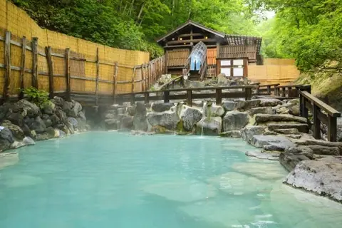
Stay
蔵王四季のホテル
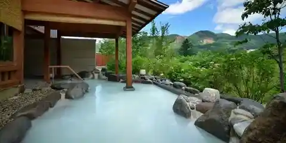
Zaou Shiki No Hoteru
Hotel in Yamagata City, Yamagata.
Dining
レストラン パ・マル
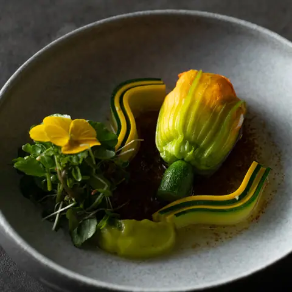
Resutoran Pa Maru
French restaurant in Yamagata City, Yamagata.
ケンチャンラーメン 山形
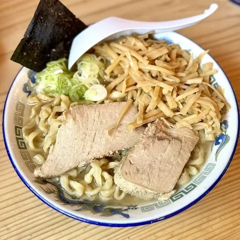
Kenchanraamen Yamagata
Ramen shop in Yamagata City, Yamagata.
つくも
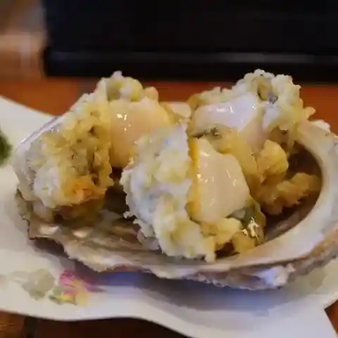
Tsukumo
Tempura restaurant in Yamagata City, Yamagata.
プルピエ
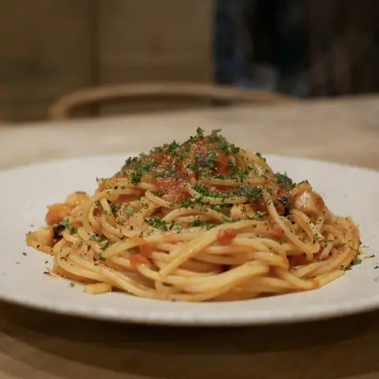
Purupie
Dining bar in Yamagata City, Yamagata.
御りょうり屋 伊藤
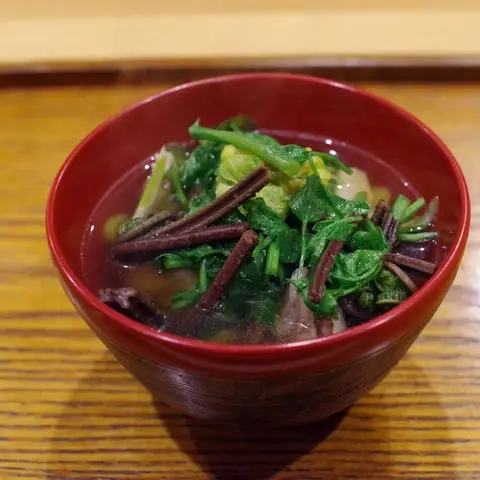
O Ryouri Ya Itou
Japanese restaurant in Yamagata City, Yamagata.
山田家
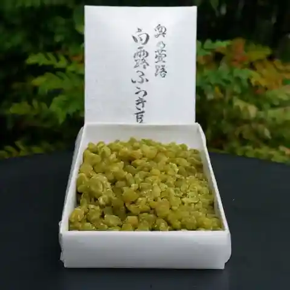
Yamada Ie
Japanese sweets shop in Yamagata City, Yamagata.
アビー
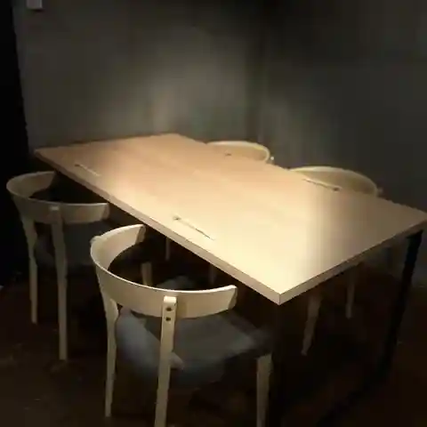
Abii
Japanese restaurant in Yamagata City, Yamagata.
居酒屋 伝七
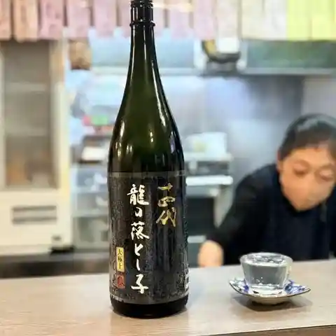
Izakaya Denshichi
Izakaya in Yamagata City, Yamagata.
イル コテキーノ
Iru Kotekiino
Italian restaurant in Yamagata City, Yamagata.
竹ふく
Take Fuku
Soba restaurant in Yamagata City, Yamagata.
ろばた
Robata
Jingisukan (lamb BBQ) restaurant in Yamagata City, Yamagata.
そね田やきとりや
Sone Ta Yakitoriya
Yakitori restaurant in Yamagata City, Yamagata.
栄屋本店
Sakae Ya Honten
Ramen shop in Yamagata City, Yamagata.
RESTAURANT AKIYAMA
Restaurant Akiyama
French restaurant in Yamagata City, Yamagata.
榮玉堂
Sakae Kyokudou
Japanese sweets café in Yamagata City, Yamagata.
credo
Credo
French restaurant in Yamagata City, Yamagata.
米沢牛登起波 山形店
Yonezawa Ushi Tou Ki Nami Yamagata Mise
Beef restaurant in Yamagata City, Yamagata.
昭和屋 そば琳
Shouwa Ya Soba Rin
Soba restaurant in Yamagata City, Yamagata.
焼肉名匠 山牛 山形店
Yakiniku Meishou Yama Ushi Yamagata Mise
Yakiniku (grilled meat) restaurant in Yamagata City, Yamagata.
手打ちそば 梅蕎麦
Teuchi Chisoba Ume Soba
Soba restaurant in Yamagata City, Yamagata.
川なり
Kawa Nari
Izakaya in Yamagata City, Yamagata.
ヤマガタ0035 アル・ケッチァーノ コンチェルト
Yamagata 0035 Aru Ketchiaano Koncheruto
Italian restaurant in Yamagata City, Yamagata.
石山寿司
Ishiyama Sushi
Sushi restaurant in Yamagata City, Yamagata.
河島
Kawashima
Chicken restaurant in Yamagata City, Yamagata.
Sights
Zao Onsen / Zao Hot Springs / Zao Onsen Mountain & Snow Resort
Zao Onsen / Zao Hot Springs / Zao Onsen Mountain & Snow Resort
Yamadera / Risshaku-ji Temple
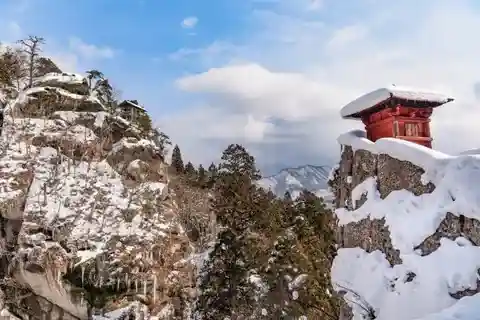
The historic temple rising to the sky along delightful mountain paths described in the great Haiku master’s poem
Kajo Park
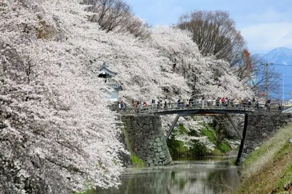
A hub for cultural attractions around reconstructed castle buildings
Zao mountain Range / Mt. Zao
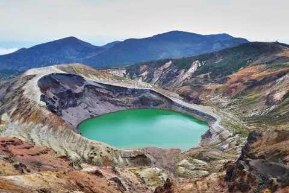
"Zao" is a general term for the mountain range that straddles both Yamagata and Miyagi prefectures.
Bunshokan
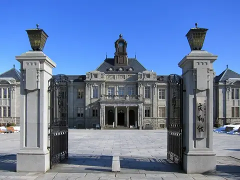
See the luxurious decoration, a nationally designated important cultural property of brick that conveys the romance of Taisho era to the present!
Zao Ropeway
https://yamagatakanko.com/en/attractions/detail_11062.html
Yamagata Station
https://yamagatakanko.com/en/transport/detail_13843.html
Nanokamachi Gotenzeki
A redevelopment commercial facility that utilizes the scenery of the weir and landscape of the hydrophilic space in masonry canal that regenerated the "Gotenzeki", one of the agricultural water weirs "Yamagata Five Weirs" that flows through the central…
Juhyo / Snow Monster (Zao’s Juhyo / Zao’s Rime / Frost Covered Trees of Zao)
Juhyo / Snow Monster (Zao’s Juhyo / Zao’s Rime / Frost Covered Trees of Zao)
Omoshiroyama Highlands
Spreading below Mt. Omoshiro on the Yamagata–Miyagi border, east of Yamadera, with trekking and hiking from spring to autumn and the Cosmos Berg cosmos field, at its best around September.
Yamagataken Kanko Bussan Kaikan
https://yamagatakanko.com/en/attractions/detail_4703.html
Yamagata Marugoto-kan Beni-no-kura
“Yamagata Marugoto-kan Beni-no-kura” has functions of offering French food made from vegetables and fruits grown in Yamagata city, selling fresh and reliable vegetables and fruits grown in Yamagata city, and traditional crafts, planning and holding…
Zao Chuo Ropeway
https://yamagatakanko.com/en/attractions/detail_11062.html
Juhyo Light-up
A light up of the Snow Monsters, the “Juhyo”.
Zao Onsen Snow Resort
https://yamagatakanko.com/en/attractions/detail_7455.html
Nightcruiser tour to see Snow Monsters
Meet one of the world’s largest Snow Monsters